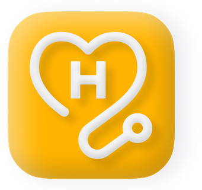
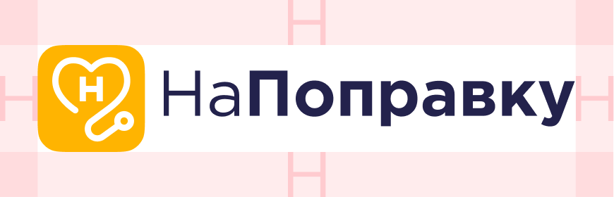
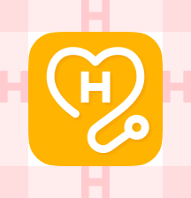
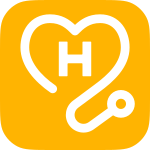
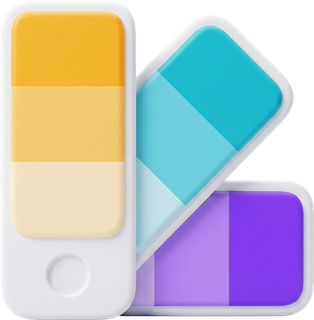
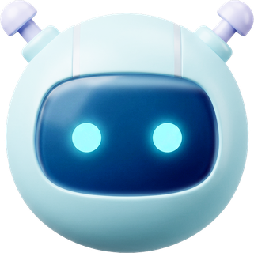

Гайдлайн большой, и необязательно читать его подряд от начала до конца — выберите то, что нужно именно вам.



Чем мельче носитель, тем проще версия логотипа. На больших макетах — полный горизонтальный логотип, на маленьких — вертикальный, на совсем мелких — только знак. Оптическая компенсация нужна потому, что при уменьшении знак кажется тяжелее надписи.

Шесть допустимых версий логотипа. Выбирайте по фону: на светлом — цветной, на тёмном — с белой надписью, в одноцветной печати — монохром.
Если фон пёстрый, тёмный или непредсказуемый, логотип ставится на белую плашку. Плашка — прямоугольник со скруглёнными углами, отступ до знака не меньше половины его высоты, радиус скругления пропорционален отступу.
Восемь ошибок, которые встречаются чаще всего. Каждая ломает узнаваемость: логотип перестают считывать с первого взгляда.
Знак без квадратной подложки можно использовать только там, где подложка мешает: аватар в соцсетях, иконка приложения, фавикон. Во всех остальных случаях знак идёт вместе с ней.

Оранжевый и голубой — основа бренда. Насыщенные оттенки идут в акценты и кнопки, светлые — в фоны и подложки. Клик по строке копирует значение.
В телемед-направлении вместо голубого используется фиолетовый. Оранжевый общий для обоих направлений — он остаётся неизменным.
Цвета состояний: красный для ошибок, зелёный для успеха, фиолетовый для телемед-акцентов. В каждой линейке четыре ступени — от насыщенной к самой светлой.
Три фирменных градиента. Копируется и отдельный цвет, и готовая CSS-строка целиком.

Montserrat — геометричный шрифт без засечек. Используется везде: и в заголовках, и в тексте. Других шрифтов в макетах быть не должно.
Аа Бб Вв Гг Дд Ее Жж Зз Ии Йй Кк Лл Мм Нн Оо Пп Рр Сс Тт Уу Фф Хх Цц Чч Шш Щщ Ъъ Ыы Ьь Ээ Юю Яя
Aa Bb Cc Dd Ee Ff Gg Hh Ii Jj Kk Ll Mm Nn Oo Pp Qq Rr Ss Tt Uu Vv Ww Xx Yy Zz
1 2 3 4 5 6 7 8 9 0 ! @ # $ % ( * )
Montserrat бесплатен, в том числе для коммерческих проектов (лицензия SIL Open Font License). Скачивайте всю гарнитуру — в макетах нужны Regular, SemiBold и Bold.
Три уровня текста закрывают все задачи: крупный заголовок, подзаголовок и основной текст. Чем мельче текст, тем больше межстрочное расстояние — так он читается легче.
С подпиской «НаПоправку Плюс» сотрудник сможет получить консультацию врача в чате приложения
С подпиской «НаПоправку Плюс» сотрудник сможет получить консультацию врача в чате приложения
С подпиской «НаПоправку Плюс» сотрудник сможет получить консультацию врача в чате приложения
Пять ступеней тёмно-синего вместо чёрного. Основной текст самый контрастный, дальше — вторичный, подписи и разделители. Белый — только на тёмных подложках.

Промты и материалы, чтобы нейросеть с первого раза выдавала результат в фирменном стиле, а не требовала десяти правок.
Обновлено
Пакет для работы в фирменном стиле: логотипы, правила по шрифту и цветам, готовый промт. Годится и для ручной работы, и для генерации в нейросети.
Совет: можно загрузить в AI-агента всю распакованную папку — агент сам разберётся, что нужно, и возьмёт нужные файлы. Прикладывать файлы по одному необязательно.
Ты — дизайнер и редактор бренда «НаПоправку» — сервиса онлайн-медицины. Всё, что ты делаешь, должно соответствовать фирменному стилю. **Цвета.** Основная пара: оранжевый #FFB401 и голубой #00B9D1. Светлые оттенки для фонов: #FED267 и #FEF0CB у оранжевого, #66D6E4 и #CCF1F7 у голубого. Для телемед-направления вместо голубого — фиолетовый #8037FC (светлые: #B387FD, #E6D7FE). Цвета состояний: красный #FF4956, зелёный #23D376. Никаких цветов вне этого списка. **Текст.** Шрифт только Montserrat. Заголовки — Bold, интерлиньяж 100%. Подзаголовки — SemiBold, 120%. Основной текст — Regular, 160%. Цвет текста тёмно-синий #373660, а не чёрный. Вторичный текст #5E5E80, подписи #8686A0. **Логотип.** Не перекрашивай, не растягивай, не поворачивай, не добавляй тени и обводки. На пёстром или тёмном фоне ставь его на белую плашку со скруглёнными углами. **Тон.** Экспертный, но без канцелярита; неформальный, но уважительный. Прямой, заботливый, спокойный. Мы партнёр рядом, а не спасатель сверху: показываем возможности и ограничения, решение оставляем за человеком. **Чего не делаем:** - не обещаем медицинский результат, которого нельзя гарантировать; - не запугиваем последствиями и не приписываем болезни; - не давим на цену: связываем её с ценностью, без «СКИДКА!!!» и капса; - не используем эмодзи в интерфейсных текстах; - не пишем «обращения», «осуществляется», «в кратчайшие сроки» и прочий канцелярит. **Задача:** [опишите, что нужно сделать: формат, аудитория, контекст, объём]
Нейросеть не гарантирует точное попадание в цвет. Итог сверяйте с разделами «Цветовая палитра» и «Шрифт» этого гайдлайна.
Обновлено
Собрано из гайдлайна «Style guide telemed» — 38 листов: логотип, палитра, шрифт и правила рекламной графики. У телемеда своя вторая краска (фиолетовый вместо голубого) и собственный стилеобразующий элемент — фирменная форма.
Ты — дизайнер бренда «НаПоправку Плюс» — телемед-направления сервиса онлайн-медицины. Всё, что ты делаешь, должно соответствовать гайдлайну телемеда. **Цвета.** Основные: оранжевый #FFB401 и фиолетовый #8037FC. Разбеленные оттенки для фонов: #FED267, #FEF0CB, #FFF8E6 у оранжевого; #B387FD, #E6D7FE, #F2EBFF у фиолетового. Дополнительные для графики: красный #FF4956, зелёный #23D376, голубой #00B9D1. Фон рекламного макета — только светлый фиолетовый #E6D7FE или насыщенный фиолетовый #8037FC. **Текст.** Шрифт только Montserrat. Крупный заголовок — Bold, интерлиньяж 100%. Средний подзаголовок — SemiBold, 120%. Основной текст — Regular, 160%. Цвет текста из шрифтовой шкалы: #373660, #4B4A70, #5E5E80, #8686A0. Чёрный не используем. **Логотип.** Вордмарк плюс знак Плюс. На цветном фоне — инвертированная версия, в одноцветной печати — монохромная. Охранное поле со всех сторон равно высоте знака. Логотип не перекрашиваем, не растягиваем, не поворачиваем, не снабжаем тенью. **Рекламный макет** состоит из четырёх элементов: посыл, графика с целевой аудиторией внутри фирменной формы, логотип в верхнем или нижнем углу, фиолетовый фон. Фирменная форма повторяет очертания знака — это главный стилеобразующий элемент. Плашки скругляются так же, как знак, и используются для цены и спецпредложений. **Иконки** — glassmorphism из трёх слоёв: символ, фиолетовая форма #8037FC, оранжевая форма с градиентом #FFB401 → #FFE000. **Тон.** Экспертный, но без канцелярита; неформальный, но уважительный. Прямой, заботливый, спокойный. Не обещаем медицинский результат, не запугиваем последствиями, не давим на цену капсом и восклицательными знаками. **Задача:** [опишите, что нужно сделать: формат, аудитория, контекст, объём]
В гайдлайне телемеда шрифтовая шкала шире, чем в основном стиле: добавлены ступени #4B4A70 и #B0AFBF. Это ответ на вопрос из раздела «Палитра текста» — серый #B0AFBF действительно фирменный.
Обновлено
Лучше всего финальную версию открывать и доделывать в Google Slides. Как перейти: скачайте готовый HTML → откройте его в браузере → нажмите «Скачать PPTX» (кнопка в шапке редактора) → в Google Drive выберите «Создать» → «Загрузить файл» → откройте загруженный PPTX. Шрифт и размер слайда сохранятся — остаётся только отправить ссылку.
Если собирать руками некогда — приложите к чату «Инструкция.md» и «PitchDeck.dc.html», вставьте этот промт и допишите данные клиента.
Совет: можно загрузить в AI-агента всю распакованную папку — агент сам разберётся, что нужно, и возьмёт нужные файлы. Прикладывать файлы по одному необязательно.
Ты — дизайнер презентаций. Я прикрепил(а) файл-инструкцию (Инструкция.md) и файл-шаблон презентации (PitchDeck.dc.html) в фирменном стиле сервиса «НаПоправку». Твоя задача — на основе этого шаблона сделать презентацию под конкретного клиента: [название клиники или компании и её особенности]. Правила: 1. Строго следуй инструкции из Инструкция.md — структура слайдов, порядок, что можно и нельзя менять. 2. Сохрани фирменный стиль: шрифт Montserrat, цвета — бирюзовый rgb(0,185,209), тёплый акцент rgb(255,180,1), зелёный rgb(35,211,118), заголовки rgb(55,54,96), текст rgb(94,94,128). Радиусы: карточки 40px, значки 20px, кнопки и бейджи — круглые. 3. Размер каждого слайда — 1920×1080px, как в шаблоне. 4. Никаких эмодзи и посторонних иконок. 5. Замени текст, цифры и подписи под картинки на данные клиента: [сфера, боли клиента, цифры, контакты]. 6. Не удаляй и не добавляй слайды без необходимости. Если нужно больше или меньше слайдов — скажи, какие типы взять за основу (чек-лист, график, изображение, медиаплан). 7. В конце выведи готовый HTML одним файлом, который можно открыть в браузере. Данные для презентации: [бриф: название клиента, проблема, цифры, сроки, контакты, ссылки на логотип и фото]
Результат правится обычными сообщениями: «замени текст на слайде 3», «добавь слайд с отзывом по образцу чек-листа».
Предыдущая версия файла остаётся в истории проекта — к ней всегда можно вернуться. Ломать не страшно.
Обновлено
Лучше всего финальную версию открывать и доделывать в Google Slides. Как перейти: скачайте готовый HTML → откройте его в браузере → нажмите «Скачать PPTX» (кнопка в шапке редактора) → в Google Drive выберите «Создать» → «Загрузить файл» → откройте загруженный PPTX. Шрифт и размер слайда сохранятся — остаётся только отправить ссылку.
Совет: можно загрузить в AI-агента всю распакованную папку — агент сам разберётся, что нужно, и возьмёт нужные файлы. Прикладывать файлы по одному необязательно.
Полный набор для внутренних материалов: бренд-гайд, CSS-токены, логотипы, иконки, фото и готовый шаблон на 31 слайд для Google Slides и PowerPoint.
Короткая версия для чата — полный бренд-контекст со всеми CSS-токенами лежит в пакете целиком (BRAND-PROMPT.md).
Ниже — бренд-гайд и CSS-токены компании «НаПоправку Плюс». Используй только эти цвета, шрифт и правила. Основные акценты — оранжевый #FFB401 и голубой #00B9D2; фиолетовый и зелёный — второстепенные. Шрифт Montserrat. Не придумывай новых цветов, градиентов и логотипов. В русском тексте ставь неразрывные пробелы после коротких предлогов и союзов, между числом и единицей (1 млн, 480 тыс., 35 ₽) и перед тире. Сделай: [что нужно — презентация, документ, лендинг, баннер]. Отдай одним HTML-файлом.